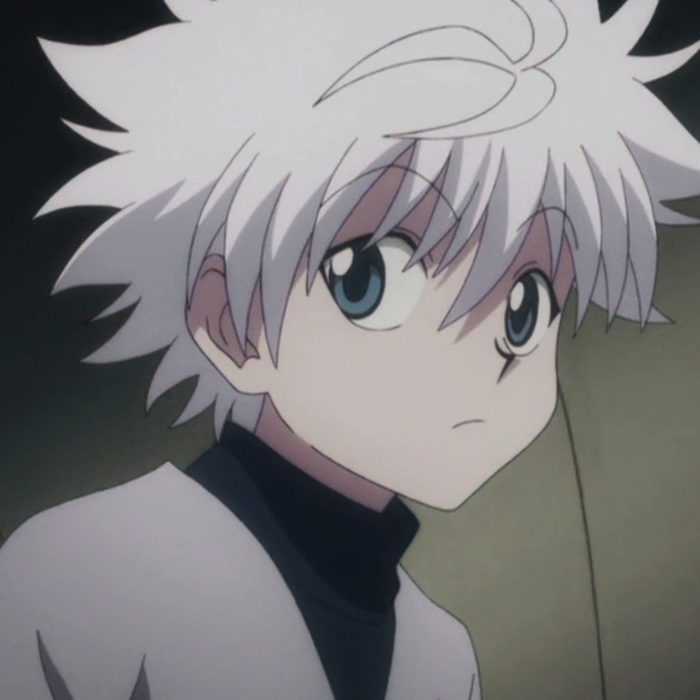
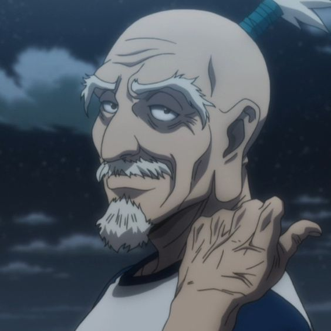
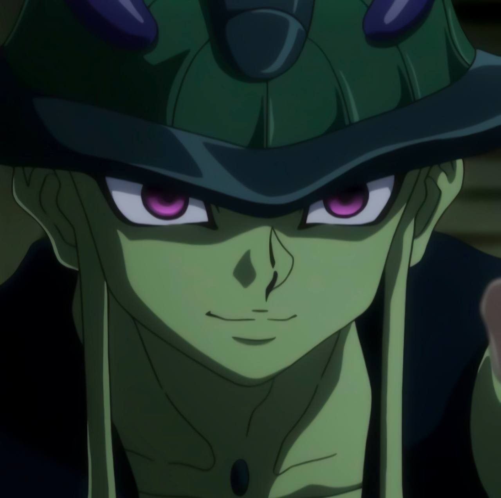
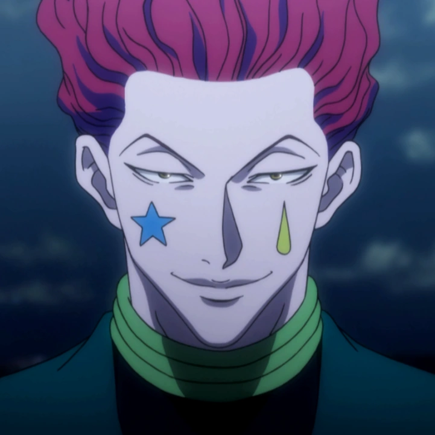
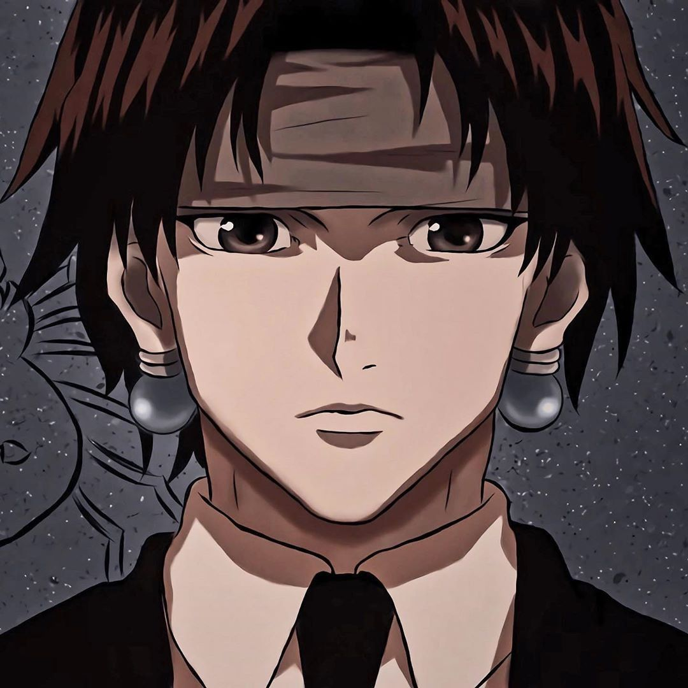

Gon Freecss
Tipo Nen: Aprimorador
Hatsu: Jajanken
Ocupação: Caçador
Arco: Exame Hunter

Killua Zoldyck
Tipo Nen: Transmutador
Hatsu: Godspeed
Ocupação: Caçador
Arco: Exame Hunter

Kurapika Kurta
Tipo Nen: Conjurador/Especialista
Hatsu: Correntes
Ocupação: Zodíaco
Arco: Exame Hunter

Leorio
Tipo Nen: Emissão
Hatsu: Remote punch
Ocupação: Zodíaco
Arco: Exame Hunter

Issac Netero
Tipo Nen: Aprimorador
Hatsu: 100-Type Guanyin Bodhisattva
Ocupação: Presidente da Associação
Arco: Exame Hunter

Meruem
Tipo Nen: Emissão
Hatsu: Aura Synthesis
Ocupação: Rei das Formigas Quimera
Arco: Formigas Quimeras

Hisoka Morow
Tipo Nen: Transmutador
Hatsu: Bungee Gum
Ocupação: Caçador
Arco: Exame Hunter

Chrollo Lucilfer
Tipo Nen: Especialista
Hatsu: Skill Hunter
Ocupação: Lider da Trupe fantasma
Arco: Yorknew City